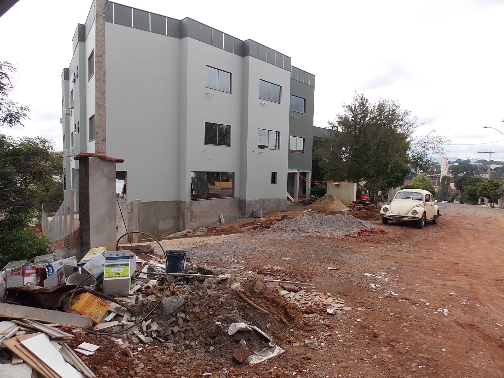

O hotel Chalé foi construído no ano de 1998 em um bairro residencial da cidade de Ubatuba,primeiro foi construido um predio de moradia para apenas uma família mais ao passar dos anos essa obra so foi se prolongando e aumentando cada vez mais e nisso algumas partes acabaram sendo alugadas para servi como uma renda extra pra família que tiveram que viajar pra outra cidade a trabalho.
Quatro anos depois, ele e sua família voltaram para o local ocupando um dos apartamentos e tiveram uma grande ideia de criar o "hotel Chalé " nome dedicado ao sobrenome da família, é essa ideia foi baseado nos hotéis em que ficaram hospedados, o que chamou a atenção foi a praticidade dos quartos a limpeza e a organização com o atendimento e cordialidade dos funcionários destes estabelecimentos, o que era o suficiente para sentir-se bem, depois de um dia estressante proveniente de longos passeios.. Aproveitando a experiência e sabendo da necessidade do mercado crescente de Ubatuba-SP da época, foi vista uma oportunidade de negócio no ramo hoteleiro que em dois anos isso trouxe muito retorno e o hotel foi ficando cada vez mais conhecido e hoje em dia em um dos maiores da praia do itaguá em Ubatuba-Sp.
O mais importante de tudo é o relacionamento dia a dia. A família Chalé acredita que pequenas ações podem transformar positivamente a vida das pessoas, por isso, o serviço de hospedar é feito com o maior carinho para que você também se sinta um membro da família.